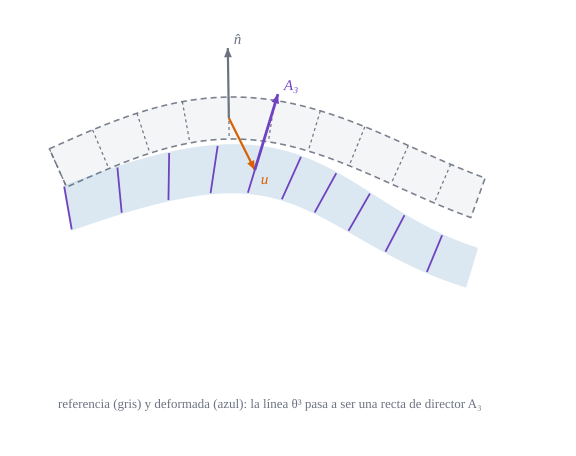

Una superficie media, un director y la deformación de Green–Lagrange del espesor

Figura 16.1: Sección de una lámina antes (gris discontinuo) y después de deformarse (azul): cada línea normal\(\theta^3\) de la configuración de referencia pasa a ser un segmento recto de dirección \(\mathbf{A}_3\) (violeta), que ya no tiene por qué ser normal a la superficie deformada ni medir uno. La superficie media se desplaza \(\mathbf{u}\) (naranja). Deformación exagerada: figura ilustrativa.
Cómo se describe el movimiento de un sólido muy delgado con solo una superficie y una flecha en cada punto, y qué deformaciones produce
Objetivos y prerrequisitos
Objetivos. Al terminar el tema sabrás:
escribir el punto del sólido-lámina como \(\mathbf{r}+\theta^3\hat{\mathbf{a}}_3\) y su base \(\mathbf{g}_i\) en función de la curvatura;
enunciar la hipótesis cinemática\(\mathbf{R}=\mathbf{R}_0+\theta^3\mathbf{A}_3\) y contar los grados de libertad que deja;
calcular exactamente la deformación de Green–Lagrange de la lámina y separarla en extensión, flexión y cortante;
reconocer qué hipótesis se añadirán después (Kirchhoff–Love en Sección 17.1, Reissner–Mindlin en Sección 18.1);
comprobar todo con Laminas.jl en un cilindro que se hincha.
curvatura de la superficie de referencia (convenio del libro)
16.1 El sólido-lámina
Una lámina es un sólido de espesor \(t\) muy pequeño frente a sus otras dimensiones y a sus radios de curvatura. Para describirlo se toma una superficie media\(\mathbf{r}(\theta^1,\theta^2)\) y se recorre el espesor a lo largo de la normal: \[
\mathbf{R}_{\rm ref}(\theta^1,\theta^2,\theta^3)=\mathbf{r}(\theta^\alpha)+\theta^3\,\hat{\mathbf{a}}_3(\theta^\alpha),\qquad -\tfrac t2\le\theta^3\le\tfrac t2 .
\tag{16.1}\]
Derivando y usando Weingarten (ecuación 9.4), la base de este sólido es \[
\mathbf{g}_\alpha=\mathbf{a}_\alpha+\theta^3\hat{\mathbf{a}}_{3,\alpha}=\bigl(\delta_\alpha^\beta-\theta^3 b_\alpha^\beta\bigr)\mathbf{a}_\beta,\qquad
\mathbf{g}_3=\hat{\mathbf{a}}_3 .
\tag{16.2}\] Es la base de la lámina del tema de curvaturas: los vectores tangentes se acortan o alargan según la curvatura y el signo de \(\theta^3\). Su volumen es \(\sqrt g\,d\theta^1d\theta^2d\theta^3\) con \(\sqrt g=\sqrt a\,(1-2H\theta^3+K\theta^{3\,2})\).
Ejemplo 16.1 (Ejemplo resuelto: la base de un cilindro) Cilindro de radio \(R\) con \(\theta^1=\varphi\) (ángulo) y \(\theta^2=z\), y normal exterior. Entonces \(\mathbf{a}_\varphi=R\,\mathbf{e}_\varphi\), \(\mathbf{a}_z=\mathbf{e}_z\) y \(b_{\varphi\varphi}=\hat{\mathbf{a}}_3\cdot\mathbf{a}_{\varphi,\varphi}=-R\), de modo que \(b^\varphi_\varphi=-1/R\). Por ecuación 16.2, \[
\mathbf{g}_\varphi=\Bigl(1+\frac{\theta^3}{R}\Bigr)\mathbf{a}_\varphi=(R+\theta^3)\,\mathbf{e}_\varphi ,
\] que es lo correcto: la fibra a distancia \(\theta^3\) de la superficie media es un círculo de radio \(R+\theta^3\). Y \(\sqrt g=R+\theta^3\), de manera que el volumen de una rebanada crece hacia fuera.
16.2 La hipótesis cinemática
Seguir a todos los puntos del sólido sería un problema 3D. La teoría de láminas lo reduce a dos dimensiones con una hipótesis sobre cómo se mueve la fibra del espesor:
Definición 16.1 (Hipótesis cinemática de la lámina) Cada línea normal\(\{\theta^\alpha\ \text{fijas}\}\) de la configuración de referencia sigue siendo una recta tras la deformación, de modo que \[
\mathbf{R}(\theta^\alpha,\theta^3)=\mathbf{R}_0(\theta^\alpha)+\theta^3\,\mathbf{A}_3(\theta^\alpha).
\tag{16.3}\]\(\mathbf{R}_0\) es la nueva posición de la superficie media y \(\mathbf{A}_3\) el director deformado; no se exige que sea unitario ni normal a la superficie deformada.
La base del sólido deformado es entonces \[
\mathbf{G}_\alpha=\mathbf{R}_{0,\alpha}+\theta^3\mathbf{A}_{3,\alpha},\qquad \mathbf{G}_3=\mathbf{A}_3 .
\tag{16.4}\] Observa la diferencia con el sólido general de D1, donde el desplazamiento es un campo arbitrario de tres variables: aquí toda la información del espesor está en \(\mathbf{A}_3\), un vector por punto de la superficie media.
TipIdea clave
Pasamos de un campo de desplazamientos de tres funciones de tres variables a seis funciones de dos: el desplazamiento \(\mathbf{R}_0-\mathbf{r}\) y el cambio del director \(\mathbf{A}_3-\hat{\mathbf{a}}_3\). Es una reducción de dimensión, no una aproximación de pequeños desplazamientos.
16.3 La deformación de Green–Lagrange de la lámina
Con la definición \(\gamma_{ij}=\tfrac12(G_{ij}-g_{ij})\) y las bases (ecuación 16.2, ecuación 16.4) se obtiene un resultado exacto:
Proposición 16.1 (Deformación exacta de la lámina)\[
\begin{aligned}
\gamma_{\alpha\beta}&=\gamma^0_{\alpha\beta}+\theta^3\gamma^1_{\alpha\beta}+(\theta^3)^2\gamma^2_{\alpha\beta},\\
\gamma_{\alpha3}&=\tfrac12\bigl(\mathbf{R}_{0,\alpha}\cdot\mathbf{A}_3-\mathbf{a}_\alpha\cdot\hat{\mathbf{a}}_3\bigr)+\tfrac12\theta^3\bigl(\mathbf{A}_{3,\alpha}\cdot\mathbf{A}_3-\hat{\mathbf{a}}_{3,\alpha}\cdot\hat{\mathbf{a}}_3\bigr),\\
\gamma_{33}&=\tfrac12\bigl(\mathbf{A}_3\cdot\mathbf{A}_3-1\bigr),
\end{aligned}
\tag{16.5}\] con las tres partes del plano \[
\gamma^0_{\alpha\beta}=\tfrac12\bigl(\mathbf{R}_{0,\alpha}\cdot\mathbf{R}_{0,\beta}-a_{\alpha\beta}\bigr),\quad
\gamma^1_{\alpha\beta}=\tfrac12\bigl(\mathbf{R}_{0,\alpha}\cdot\mathbf{A}_{3,\beta}+\mathbf{R}_{0,\beta}\cdot\mathbf{A}_{3,\alpha}\bigr)+b_{\alpha\beta},\quad
\gamma^2_{\alpha\beta}=\tfrac12\bigl(\mathbf{A}_{3,\alpha}\cdot\mathbf{A}_{3,\beta}-\hat{\mathbf{a}}_{3,\alpha}\cdot\hat{\mathbf{a}}_{3,\beta}\bigr).
\tag{16.6}\]
Es multiplicar bases. De ecuación 16.4, \(G_{\alpha\beta}=\mathbf{R}_{0,\alpha}\cdot\mathbf{R}_{0,\beta}+\theta^3(\mathbf{R}_{0,\alpha}\cdot\mathbf{A}_{3,\beta}+\mathbf{R}_{0,\beta}\cdot\mathbf{A}_{3,\alpha})+(\theta^3)^2\mathbf{A}_{3,\alpha}\cdot\mathbf{A}_{3,\beta}\), y lo mismo para \(g_{\alpha\beta}\) con \(\mathbf{r}\) y \(\hat{\mathbf{a}}_3\). Al restar, el término lineal contiene \(-(\mathbf{a}_\alpha\cdot\hat{\mathbf{a}}_{3,\beta}+\mathbf{a}_\beta\cdot\hat{\mathbf{a}}_{3,\alpha})=2b_{\alpha\beta}\) por Weingarten (ecuación 9.4): de ahí el \(+b_{\alpha\beta}\) de \(\gamma^1\). Para \(\gamma_{\alpha3}\) y \(\gamma_{33}\): \(G_{\alpha3}=\mathbf{R}_{0,\alpha}\cdot\mathbf{A}_3+\theta^3\mathbf{A}_{3,\alpha}\cdot\mathbf{A}_3\), \(G_{33}=\mathbf{A}_3\cdot\mathbf{A}_3\), y en referencia \(g_{\alpha3}=\mathbf{a}_\alpha\cdot\hat{\mathbf{a}}_3+\theta^3\hat{\mathbf{a}}_{3,\alpha}\cdot\hat{\mathbf{a}}_3=0\), \(g_{33}=1\). \(\blacksquare\)
Los tres nombres de las partes dicen su significado físico:
Parte
Qué mide
Origen
\(\gamma^0_{\alpha\beta}\)
extensión (membrana): cambio de métrica de la superficie media
\(\mathbf{R}_0\)
\(\gamma^1_{\alpha\beta}\)
flexión: cambio de curvatura (más el estiramiento de la fibra)
\(\mathbf{R}_0\) y \(\mathbf{A}_3\)
\(\gamma_{\alpha3}\)
cortante transversal: giro relativo entre la fibra y la superficie
\(\mathbf{R}_0\) y \(\mathbf{A}_3\)
\(\gamma_{33}\)
estiramiento del espesor (si \(|\mathbf{A}_3|\neq1\))
\(\mathbf{A}_3\)
Ejemplo 16.2 (Ejemplo resuelto: un cilindro que se hincha) Se desplaza radialmente la superficie media del cilindro del Ejemplo 16.1 una cantidad \(u\) (hacia fuera) y el director sigue siendo la normal: \(\mathbf{R}_0=(R+u)\,(\cos\varphi,\sin\varphi)\), \(\mathbf{A}_3=\hat{\mathbf{a}}_3\). Entonces \(\mathbf{R}_{0,\varphi}=(R+u)\mathbf{e}_\varphi\) y \(\mathbf{A}_{3,\varphi}=\mathbf{e}_\varphi\), de modo que por ecuación 16.6: \[
\gamma^0_{\varphi\varphi}=\tfrac12\bigl[(R+u)^2-R^2\bigr]=Ru+\tfrac12u^2,\qquad
\gamma^1_{\varphi\varphi}=(R+u)-R=u,\qquad \gamma^2_{\varphi\varphi}=0 .
\] Los demás \(\gamma\) valen 0. Por tanto \(\gamma_{\varphi\varphi}(\theta^3)=u(R+\theta^3)+\tfrac12u^2\) y la deformación física (sobre la base de longitud \(R+\theta^3\)) es \[
\varepsilon_{\varphi\varphi}(\theta^3)=\frac{\gamma_{\varphi\varphi}}{(R+\theta^3)^2}\approx\frac{u}{R+\theta^3},
\] que es la deformación de un aro de radio \(R+\theta^3\) cuyo perímetro crece de \(2\pi(R+\theta^3)\) a \(2\pi(R+\theta^3+u)\). La fibra exterior se deforma menos que la interior. Con \(R=2000\) mm, \(t=100\) mm y \(u=1\) mm, la cara exterior (\(\theta^3=50\) mm) da \(\varepsilon\approx1/2050=4{,}88\cdot10^{-4}\).
Pon a prueba lo anterior.
En el Ejemplo 16.2, ¿cuánto vale la deformación circunferencial de la cara interior (\(\theta^3=-50\) mm) para \(R=2000\) mm y \(u=1\) mm? Usa \(\varepsilon\approx u/(R+\theta^3)\).
La fibra interior está a \(R+\theta^3=1950\) mm del eje.
\(\varepsilon=1/1950=5{,}13\cdot10^{-4}\), un 5 % mayor que en la cara exterior (\(4{,}88\cdot10^{-4}\)).
En la hipótesis cinemática general de la lámina, el director deformado \(\mathbf{A}_3\):
es siempre unitario
es siempre normal a la superficie media deformada
puede no ser unitario ni normal
coincide con \(\hat{\mathbf{a}}_3\)
Es un vector libre en cada punto. Si se impone que sea unitario se pierde el estiramiento del espesor (\(\gamma_{33}=0\)); si además es normal, se tiene la teoría de Kirchhoff–Love.
AdvertenciaDos puntos que suelen confundir
\(\mathbf{A}_3\) no es la «nueva normal»: es lo que la teoría hace de la fibra. En Kirchhoff–Love coincide con la normal de la deformada (Sección 17.1); en Reissner–Mindlin, no.
Hipótesis cinemática \(\ne\) pequeños desplazamientos: ecuación 16.5 es exacta para cualquier \(\mathbf{R}_0\) y \(\mathbf{A}_3\); solo la recta es una hipótesis.
16.4 Grados de libertad
La cantidad de funciones independientes que quedan en cada punto distingue las teorías:
El elemento finito de lámina del libro usa cinco grados de libertad por nodo (tres desplazamientos y dos giros del director).
16.5 Práctica guiada en Julia
TipEjemplo computacional
calculado Se reproduce el Ejemplo 16.2 con deformacion_lamina_exacta, que deriva numéricamente \(\mathbf{R}_0+\theta^3\mathbf{A}_3\) y \(\mathbf{r}+\theta^3\hat{\mathbf{a}}_3\), y se compara con la fórmula cerrada.
usingGeometria, LinearAlgebraR, u, t =2000.0, 1.0, 100.0r =cilindro(R)R0 =cilindro(R + u) # la superficie media se hincha uA3(θ) = [cos(θ[1]), sin(θ[1]), 0.0] # el director sigue siendo la normalθ = [0.9, 0.3]γ_ext =deformacion_lamina_exacta(r, R0, A3, θ, t /2) # cara exteriorγ_int =deformacion_lamina_exacta(r, R0, A3, θ, -t /2) # cara interiorgφφ(θ3) = (R + θ3)^2(γφφ_ext = γ_ext[1, 1], formula_ext = u * (R + t /2) + u^2/2, ε_ext = γ_ext[1, 1] /gφφ(t /2), ε_int = γ_int[1, 1] /gφφ(-t /2), aprox_ext = u / (R + t /2), aprox_int = u / (R - t /2))
Estiramiento del espesor. Si el director mide \(|\mathbf{A}_3|=1{,}05\), ¿cuánto vale \(\gamma_{33}\)?
NotaSolución
\(\gamma_{33}=\tfrac12(1{,}05^2-1)=0{,}05125\): un 5 % de alargamiento da una deformación de Green–Lagrange del 5,1 %.
Esfera. Una esfera de radio \(R\) se infla a radio \(R+u\) con director = normal. Calcula \(\gamma^0\) y \(\gamma^1\) (en componentes físicas, divide por \(a_{\alpha\alpha}\)).
NotaSolución
Por simetría, en cualquier dirección del plano \(\gamma^0\to Ru+\tfrac12u^2\) (en la base de longitud \(R\), \(\varepsilon^0=u/R+\tfrac12u^2/R^2\)) y \(\gamma^1=u\). Es el cilindro de dos curvaturas iguales.
Giro rígido. Prueba que si \(\mathbf{R}_0\) y \(\mathbf{A}_3\) son los de referencia girados por la misma rotación \(Q\), todas las deformaciones son nulas.
NotaSolución
Los productos escalares \(\mathbf{R}_{0,\alpha}\cdot\mathbf{R}_{0,\beta}\), etc. no cambian con una rotación (ortogonal), así que \(G_{ij}=g_{ij}\) y \(\gamma_{ij}=0\). Es la propiedad de invariancia de Green–Lagrange (D1).
La doy por superada si…
Describo el sólido-lámina con \(\mathbf{r}+\theta^3\hat{\mathbf{a}}_3\) y escribo su base con \(b^\beta_\alpha\).
Enuncio la hipótesis cinemática y sé que \(\mathbf{A}_3\) no tiene por qué ser unitario ni normal.
Calculo \(\gamma^0\), \(\gamma^1\), \(\gamma_{\alpha3}\) y \(\gamma_{33}\) de un movimiento sencillo (cilindro que se hincha).
Cuento los grados de libertad por punto de cada teoría.
NotaFuentes, correcciones y qué queda pendiente
Fuentes. Texto autónomo; cinemática de láminas con director en la línea de las referencias estándar (Novozhilov 1959; Flügge 1972). Todas las fórmulas de Proposición 16.1 se comprueban con deformacion_lamina_exacta (conjunto «Cinemática de láminas» de los tests).
Correcciones. La expresión de \(\gamma^1_{\alpha\beta}\) lleva el signo \(+b_{\alpha\beta}\) con el convenio \(b_{\alpha\beta}=\hat{\mathbf{a}}_3\cdot\mathbf{a}_{\alpha,\beta}\); con el signo contrario de la curvatura cambia el de ese término (ver notación).
Qué queda pendiente. Sin nota histórica (no se dispone aún de fuente verificada); los convenios de giros del director (por confirmar) se tratan en D5; figuras con revisión visual pendiente; referencias no leídas línea a línea.
Flügge, W. 1972. Tensor Analysis and Continuum Mechanics. Springer-Verlag.
Novozhilov, V. V. 1959. The Theory of Thin Shells. P. Noordhoff ltd.
Referencias
Son las mismas que aparecen en el margen, junto al texto.
Flügge, W. 1972. Tensor Analysis and Continuum Mechanics. Springer-Verlag.
Novozhilov, V. V. 1959. The Theory of Thin Shells. P. Noordhoff ltd.